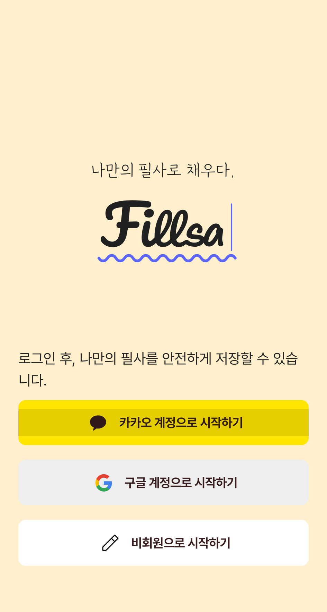
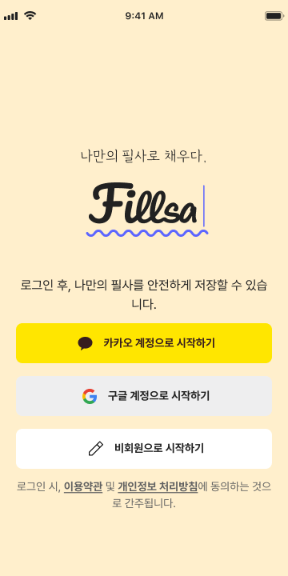
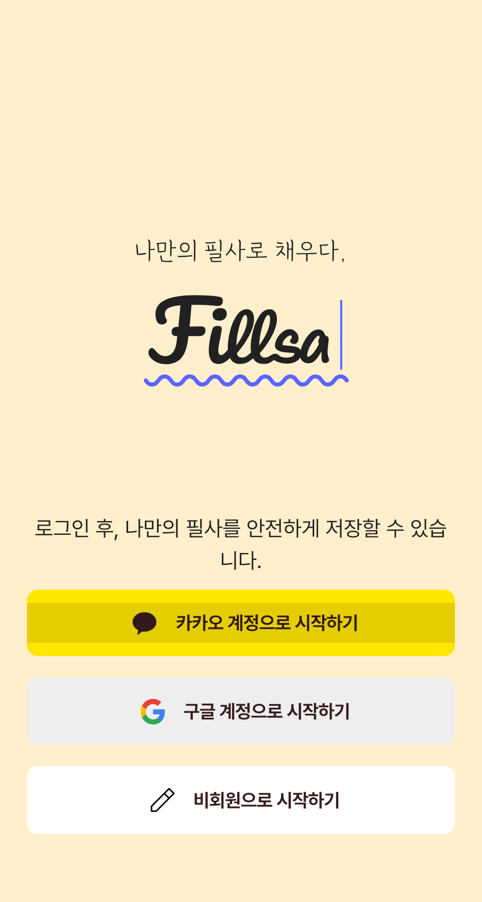
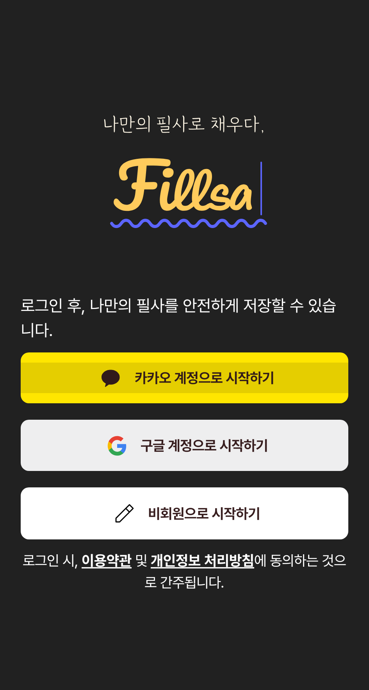
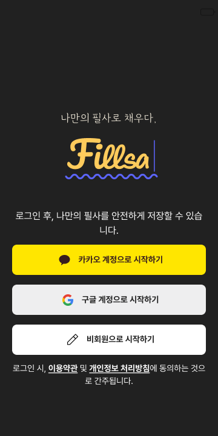
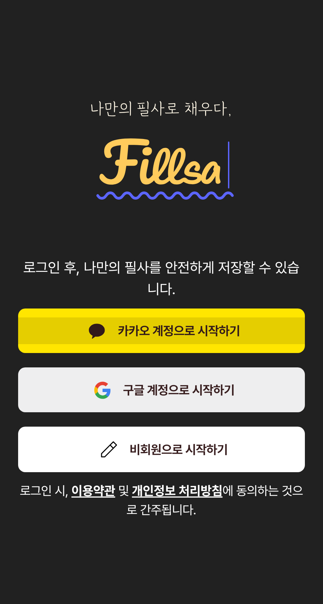
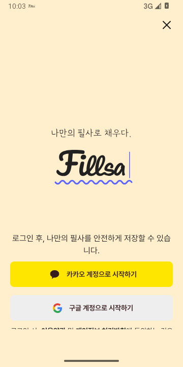
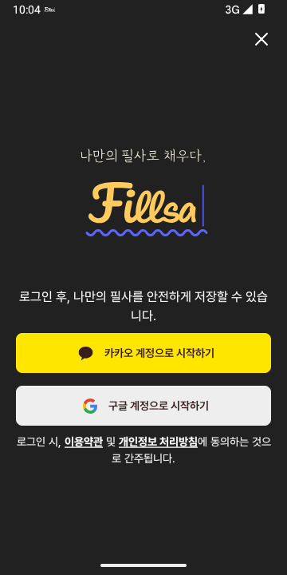

4. AS-IS → Figma → TO-BE
Light · 설명 컴포넌트와 전체 화면



Dark · 설명 컴포넌트와 전체 화면



실제 실행 전체 프레임


실행 경로는 My Page → 로그인으로 isOnboarding=true이며 Figma의 비회원 버튼 상태와 다릅니다. 닫기 아이콘·버튼 수·하단 배치, Android 시스템 바가 목표 프레임과 다르므로 전체 조립 화면을 Pass로 처리하지 않았습니다.